Trợ lý Handfree là tính năng cho phép tài xế điều khiển toàn bộ ứng dụng Giao Thông 365 v2.5 bằng giọng nói tiếng Việt: chuyển màn hình, đặt & xoá lộ trình, tra cứu phạt nguội, phát radio, gọi cứu hộ, báo sự cố giao thông… tất cả mà không cần chạm tay vào màn hình.
Trợ lý gồm hai phần phối hợp:
Ở giữa là bộ não lệnh (Voice Engine) — quyết định câu nói của tài xế ứng với hành động nào, có an toàn để thực hiện ngay không, hay cần xác nhận lại.
| Đối tượng | Họ dùng Handfree để… |
|---|---|
| Tài xế ô tô cá nhân | Điều hướng app khi đang lái, không rời tay khỏi vô lăng. |
| Lái xe dịch vụ / vận tải | Tra cứu phạt nguội, mở radio, báo sự cố nhanh chóng. |
| Người khiếm thị / hạn chế thao tác | Truy cập tiện ích bằng giọng nói thay cho cảm ứng. |
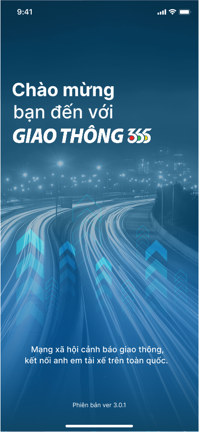
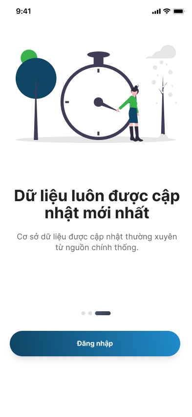
Khi đang lái xe, tài xế không thể (và không nên) cầm điện thoại để vuốt, gõ, chọn. Mọi giây mất tập trung đều có thể gây ra tai nạn. Trợ lý Handfree giải bài toán này bằng cách biến mọi tác vụ phổ biến trong app GT365 thành một câu nói tự nhiên.
Hệ thống chia làm 3 tầng rõ ràng:
Tại sao cần Voice Bridge ở giữa?
Lấy ví dụ: tài xế đang ở Trang chủ và nói “Mở radio”. Bên dưới là 16 bước xảy ra trong khoảng 1–2 giây:
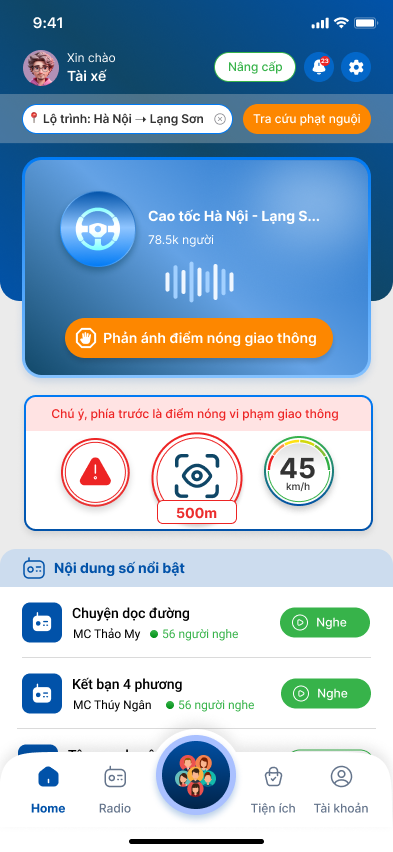
| Trạng thái | Ý nghĩa | Cách vào |
|---|---|---|
| idle | Trợ lý đang ngủ, không nghe. | Mặc định khi mở app, hoặc sau khi nói “Đóng trợ lý”. |
| listening | Đang nghe và stream audio. | Bấm nút mic, hoặc nói “Mở trợ lý” / “GT365 ơi”. |
| thinking | Đã nhận transcript, đang khớp lệnh. | Tự động sau khi có final transcript. |
| speaking | TTS đang đọc phản hồi. | Sau khi action thực thi xong. |
| confirming | Đợi tài xế xác nhận lại lệnh nguy hiểm. | Khi gặp action có dangerLevel = confirm. |
| Mã lệnh | Câu mẫu | Tác dụng |
|---|---|---|
| ASSISTANT_WAKE | “Mở trợ lý”, “Nghe lệnh”, “GT365 ơi”, “Bật trợ lý” | Đánh thức và bắt đầu nghe. |
| ASSISTANT_CLOSE | “Đóng trợ lý”, “Dừng nghe”, “Thoát trợ lý” | Đưa về trạng thái idle. |
| ASSISTANT_HELP | “Trợ giúp”, “Có thể nói gì”, “Hướng dẫn lệnh” | Đọc danh sách gợi ý ở màn hình hiện tại. |
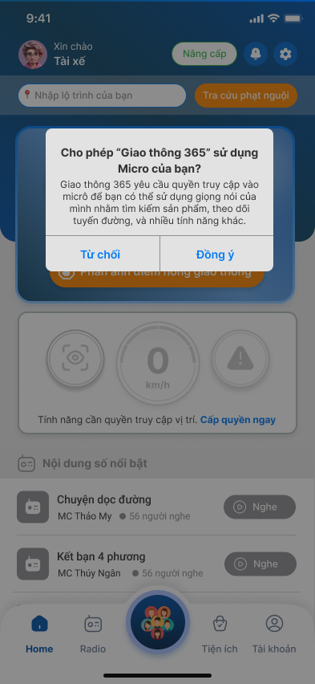
Lần đầu kích hoạt, app sẽ xin quyền Micro. Nếu tài xế từ chối, trợ lý không thể nghe — chỉ còn thao tác chạm. Quyền có thể bật lại sau ở Tài khoản → Quyền truy cập.
Quyền Vị trí không bắt buộc cho riêng trợ lý, nhưng cần thiết cho lộ trình và cảnh báo điểm nóng.
Tổng cộng 65 mã lệnh (intent code), gom theo nhóm nghiệp vụ. Cột An toàn cho biết có cần xác nhận lại không:
| Mã lệnh | Câu mẫu | An toàn |
|---|---|---|
| ASSISTANT_WAKE | mở trợ lý · nghe lệnh · gt365 ơi · bật trợ lý | safe |
| ASSISTANT_CLOSE | đóng trợ lý · dừng nghe · thoát trợ lý | safe |
| ASSISTANT_HELP | trợ giúp · có thể nói gì · hướng dẫn lệnh · lệnh hỗ trợ | safe |
| Mã lệnh | Câu mẫu | An toàn |
|---|---|---|
| NAV_HOME | về trang chủ · mở trang chủ · trang chủ | safe |
| NAV_RADIO | mở radio · vào radio · mở nội dung số · nghe radio | safe |
| NAV_UTILITIES | mở tiện ích · vào tiện ích · dịch vụ tiện ích | safe |
| NAV_COMMUNITY | mở cộng đồng · vào cộng đồng · xem cộng đồng | safe |
| NAV_PROFILE | mở tài khoản · vào tài khoản · mở profile · hồ sơ của tôi | safe |
| NAV_NOTIFICATIONS | mở thông báo · xem thông báo · thông báo | safe |
| NAV_BACK | quay lại · trở lại · lùi lại | safe |
| Mã lệnh | Câu mẫu | An toàn |
|---|---|---|
| LIST_SCROLL_DOWN | cuộn xuống · kéo xuống · xem thêm bên dưới | safe |
| LIST_SCROLL_UP | cuộn lên · kéo lên · xem bên trên | safe |
| LIST_SELECT_1 | chọn mục đầu tiên · chọn mục số một · chọn cái đầu tiên | safe |
| LIST_SELECT_2 | chọn mục thứ hai · chọn mục số hai · chọn cái thứ hai | safe |
| Mã lệnh | Câu mẫu | An toàn |
|---|---|---|
| ROUTE_OPEN | nhập lộ trình · mở lộ trình · đặt lộ trình | safe |
| ROUTE_SET_HN_LS | đặt lộ trình từ hà nội đến lạng sơn · đi từ hà nội đến lạng sơn | safe |
| ROUTE_EDIT_ORIGIN | đổi điểm đi · sửa điểm đi | safe |
| ROUTE_EDIT_DESTINATION | đổi điểm đến · sửa điểm đến | safe |
| ROUTE_CLEAR | xóa lộ trình · bỏ lộ trình · hủy lộ trình | confirm |
| Mã lệnh | Câu mẫu | An toàn |
|---|---|---|
| DRIVE_READ_ALERTS | có gì phía trước · phía trước có gì · đọc cảnh báo phía trước | safe |
| DRIVE_REPEAT_ALERT | nhắc lại cảnh báo · đọc lại cảnh báo | safe |
| SETTING_SPEED_ALERT_ON | bật cảnh báo tốc độ · mở cảnh báo tốc độ | safe |
| SETTING_SPEED_ALERT_OFF | tắt cảnh báo tốc độ | confirm |
| SETTING_HOTSPOT_ALERT_ON | bật cảnh báo điểm nóng · mở cảnh báo điểm nóng | safe |
| Mã lệnh | Câu mẫu | An toàn |
|---|---|---|
| REPORT_OPEN | phản ánh điểm nóng · mở phản ánh giao thông | safe |
| REPORT_TRAFFIC_JAM | báo kẹt xe · báo ùn tắc · phản ánh kẹt xe | confirm |
| REPORT_ACCIDENT | báo tai nạn · phản ánh tai nạn | confirm |
| REPORT_OBSTACLE | báo chướng ngại vật · báo vật cản | confirm |
| REPORT_SUBMIT | gửi phản ánh · xác nhận phản ánh | confirm |
| Mã lệnh | Câu mẫu | An toàn |
|---|---|---|
| RADIO_PLAY | phát radio · bật radio · tiếp tục phát | safe |
| RADIO_PAUSE | tạm dừng · dừng radio · tạm dừng radio | safe |
| MEDIA_NEXT | tiếp theo · bài tiếp theo · chuyển bài | safe |
| MEDIA_PREV | bài trước · quay lại bài trước · nội dung trước | safe |
| RADIO_TALK_OPEN | trò chuyện với mc · nói chuyện với mc · vào phòng trò chuyện | safe |
| RADIO_MIC_MUTE | tắt mic · tắt micro | safe |
| RADIO_MIC_UNMUTE | bật mic · bật micro | safe |
| RADIO_SPEAKER_ON | bật loa · mở loa ngoài | safe |
| RADIO_LEAVE_ROOM | rời phòng · thoát phòng trò chuyện | confirm |
| CONTENT_PLAY_ROAD_STORY | nghe chuyện dọc đường · mở chuyện dọc đường | safe |
| CONTENT_PLAY_FRIENDS | nghe kết bạn bốn phương · mở kết bạn bốn phương | safe |
| Mã lệnh | Câu mẫu | An toàn |
|---|---|---|
| FINE_OPEN | tra cứu phạt nguội · mở phạt nguội · kiểm tra phạt nguội | safe |
| FINE_CHECK_NOW | kiểm tra ngay · tra cứu ngay | safe |
| VEHICLE_SELECT | chọn xe · đổi xe | safe |
| FINE_VIEW_ALL | xem tất cả kết quả · xem lịch sử tra cứu | safe |
| FINE_OPEN_DETAIL | xem chi tiết lỗi · mở chi tiết lỗi | safe |
| FINE_PAYMENT_GUIDE | hướng dẫn nộp phạt · cách nộp phạt | safe |
| FINE_SUBSCRIBE_OPEN | đăng ký nhận thông báo phạt nguội · bật thông báo phạt nguội | safe |
| Mã lệnh | Câu mẫu | An toàn |
|---|---|---|
| UTILITY_INSURANCE_OPEN | mở bảo hiểm xe · bảo hiểm xe · mua bảo hiểm xe | safe |
| UTILITY_RESCUE_OPEN | mở cứu hộ · cứu hộ hai bốn bảy · gọi cứu hộ | safe |
| UTILITY_GAS_OPEN | tìm trạm xăng · mở trạm xăng | safe |
| UTILITY_REGISTRATION_OPEN | mở đăng kiểm · đăng kiểm | safe |
| UTILITY_CAR_VALUATION_OPEN | định giá xe · mở định giá xe | safe |
| INSURANCE_VIEW_TNDS | xem bảo hiểm trách nhiệm dân sự · bảo hiểm trách nhiệm dân sự | safe |
| INSURANCE_VIEW_PHYSICAL | xem bảo hiểm vật chất · bảo hiểm vật chất | safe |
| INSURANCE_BUY | mua bảo hiểm · bắt đầu mua bảo hiểm | confirm |
| Mã lệnh | Câu mẫu | An toàn |
|---|---|---|
| COMMUNITY_ENTER_FIRST | vào kênh đầu tiên · mở nhóm đầu tiên | safe |
| COMMUNITY_JOIN | tham gia nhóm này · tham gia cộng đồng | confirm |
| PROFILE_VEHICLE_MANAGE | mở quản lý phương tiện · quản lý phương tiện | safe |
| SETTINGS_DISPLAY_OPEN | mở thông báo và hiển thị · cài đặt hiển thị | safe |
| SETTINGS_PERMISSION_OPEN | mở quyền truy cập · quản lý quyền truy cập | safe |
| Mã lệnh | Câu mẫu | An toàn |
|---|---|---|
| PERMISSION_LOCATION_ON | bật vị trí · cho phép vị trí | safe |
| PERMISSION_LOCATION_OFF | tắt vị trí | confirm |
| PERMISSION_MIC_ON | bật micro · bật mic | safe |
| PERMISSION_MIC_OFF | tắt micro · tắt mic | confirm |
| Mã lệnh | Câu mẫu | An toàn |
|---|---|---|
| CONFIRM_YES | đồng ý · xác nhận · đúng rồi · ok · có | safe |
| CONFIRM_NO | không · hủy · bỏ qua · thôi · không đồng ý | safe |
Phần này minh hoạ cách trợ lý làm việc thực tế: mỗi kịch bản gồm một hội thoại ngắn giữa Tài xế (T) và Trợ lý (B), kèm ảnh chụp màn hình mà tài xế sẽ thấy sau khi lệnh thực thi.
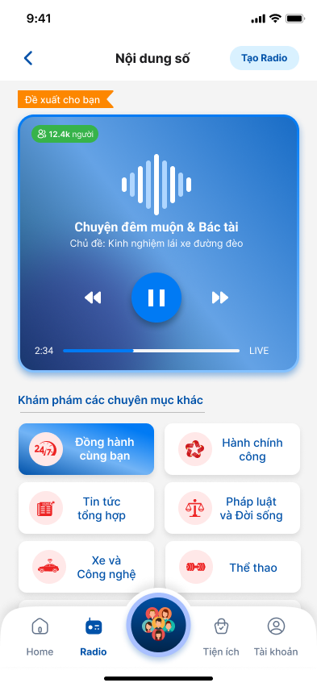
NAV_RADIO → mở màn hình Radio.CONTENT_PLAY_ROAD_STORY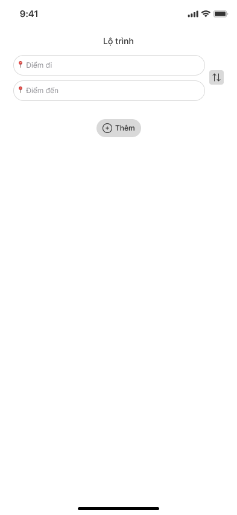
ROUTE_OPENROUTE_SET_HN_LS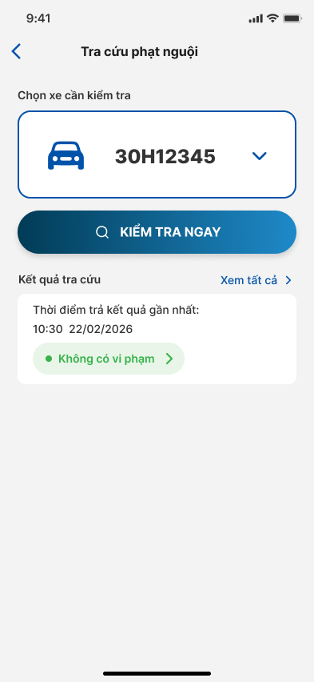
FINE_OPENLIST_SELECT_1FINE_CHECK_NOW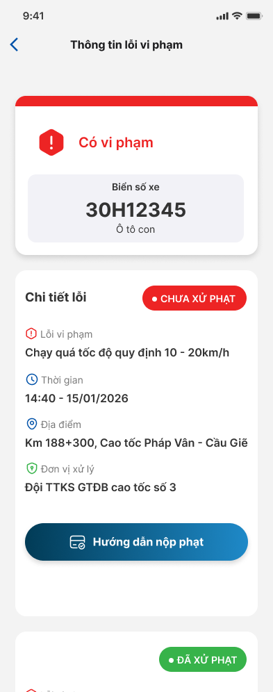
FINE_OPEN_DETAILFINE_PAYMENT_GUIDE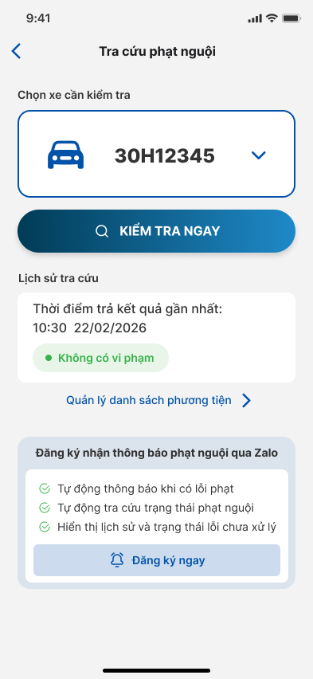
FINE_SUBSCRIBE_OPENREPORT_TRAFFIC_JAM · dangerLevel: confirmCONFIRM_YES → thực hiện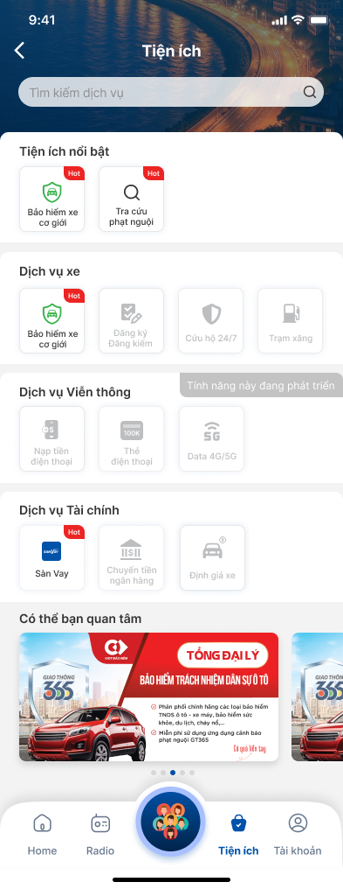
NAV_UTILITIESUTILITY_RESCUE_OPENUTILITY_GAS_OPEN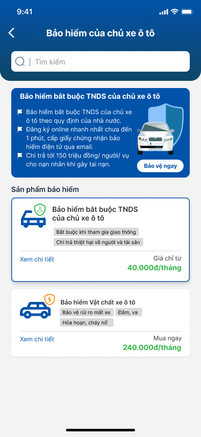
UTILITY_INSURANCE_OPENINSURANCE_VIEW_TNDSINSURANCE_BUY · dangerLevel: confirm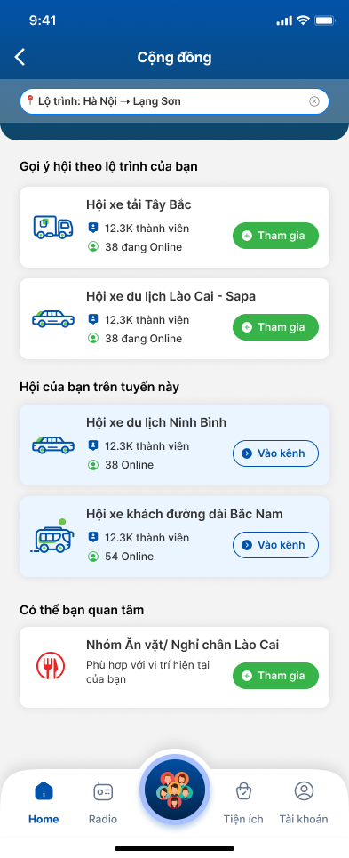
NAV_COMMUNITYCOMMUNITY_ENTER_FIRSTCOMMUNITY_JOIN · dangerLevel: confirm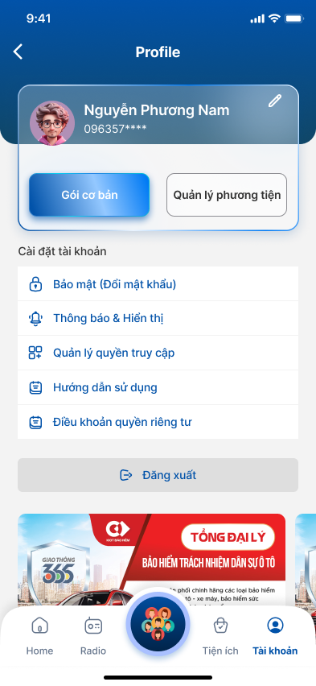
NAV_PROFILEPROFILE_VEHICLE_MANAGE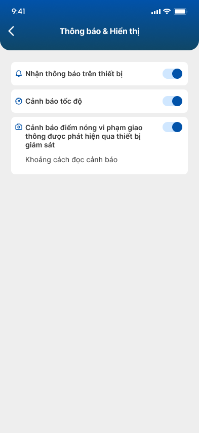
SETTINGS_DISPLAY_OPEN)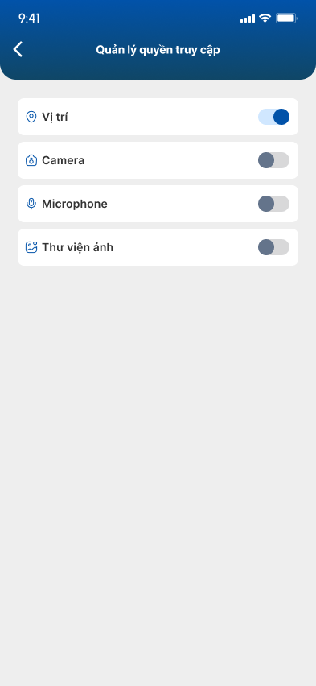
SETTINGS_PERMISSION_OPEN)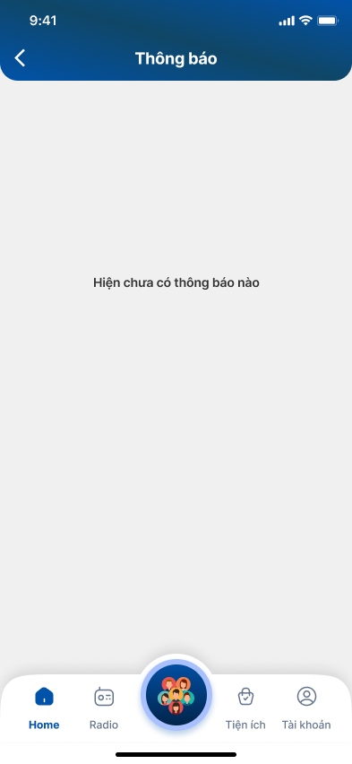
NAV_NOTIFICATIONSLIST_SCROLL_DOWNLIST_SELECT_2Mỗi lệnh có một thuộc tính dangerLevel với 3 mức:
| Mức | Hành vi | Ví dụ lệnh |
|---|---|---|
| safe | Thực hiện ngay sau khi khớp. | NAV_RADIO, RADIO_PLAY, FINE_OPEN |
| confirm | Chuyển sang trạng thái confirming, đọc câu hỏi xác nhận, đợi CONFIRM_YES hoặc CONFIRM_NO (timeout 5–8s sẽ tự huỷ). |
ROUTE_CLEAR, REPORT_TRAFFIC_JAM, INSURANCE_BUY, PERMISSION_LOCATION_OFF |
| blocked | Bị chặn nếu app phát hiện đang di chuyển; trợ lý gợi ý dừng xe an toàn rồi thử lại. | Dành cho các tác vụ phức tạp (đăng nhập, nhập biển số dài...) — roadmap. |
CONFIRM_YES và CONFIRM_NO được ưu tiên (priority = 8).
| Ngôn ngữ | Endpoint ASR | Trạng thái |
|---|---|---|
| Tiếng Việt (mặc định) | ASR_GRPC_URI (cổng 9112) | Đầy đủ ~65 lệnh. |
| Tiếng Mông (Hmong) | ASR_HMONG_GRPC_URI (cổng 9113) | ASR sẵn sàng. Catalog lệnh sẽ bổ sung ở phase sau. |
Trước khi khớp lệnh, transcript được chuẩn hoá để bỏ qua các khác biệt nhỏ:
ROUTE_OPEN.Không. ASR và TTS đều cần kết nối tới upstream. Khi mất mạng, app sẽ thông báo và tự động tắt trợ lý.
ASR có cơ chế phát hiện im lặng (ASR_SILENCE_TIMEOUT = 10s) và độ dài tối đa (ASR_SPEECH_MAX = 30s).
Nếu transcript trống hoặc điểm khớp dưới ngưỡng, trợ lý sẽ nói “Xin lỗi, tôi chưa nghe rõ” và tiếp tục nghe.
MVP hiện tại không lưu audio. Chỉ transcript được dùng tạm thời để khớp lệnh, không persistent.
Có — giọng được cấu hình ở backend qua biến TTS_VOICE_ID (mặc định phuongnhi-north),
và TTS_TEMPO (0.5–2.0) cho tốc độ đọc.
Không — RADIO_MIC_MUTE chỉ hoạt động trên màn hình radioOnAir. Đây là cơ chế context-aware:
cùng một câu chỉ làm việc đúng nơi cần làm.
Kiểm tra: (1) đã cấp quyền Micro chưa, (2) đang dùng trên http://localhost hoặc HTTPS chưa
(vì trình duyệt chặn mic trên http public), (3) Voice Bridge có chạy không
— gọi GET /api/voice-health.
| Thuật ngữ | Giải thích ngắn |
|---|---|
| ASR | Automatic Speech Recognition — chuyển giọng nói thành văn bản. |
| TTS | Text-to-Speech — chuyển văn bản thành giọng nói. |
| Intent / Mã lệnh | Mã định danh ý định của người dùng, vd NAV_RADIO. |
| Phrase | Một cách nói cụ thể của cùng một intent. Một intent có nhiều phrase. |
| Matcher | Bộ so khớp transcript với phrase, trả ra intent + điểm tin cậy. |
| Screen-aware action | Mapping intent × màn hình → hành động; tránh nhập nhằng. |
| Confirming | Trạng thái đợi xác nhận sau lệnh có dangerLevel = confirm. |
| Voice Bridge | Server Node.js trung gian; proxy WebSocket ↔ gRPC/WS upstream. |
| Interim transcript | Bản dịch tạm trong khi tài xế đang nói. |
| Final transcript | Bản dịch chốt khi tài xế dừng nói; được dùng để khớp lệnh. |
README.md — tổng quan dự án & cách chạydocs/HANDFREE.md — bản markdown chi tiết kỹ thuậtmd_tmp/BA_HANDSFREE_MVP_PLAN.md — yêu cầu BAmd_tmp/ASR_TTS_INTEGRATION_PLAN.md — kế hoạch tích hợp ASR/TTSsrc/voice/commands.ts — danh sách lệnh nguồn (~65 lệnh)